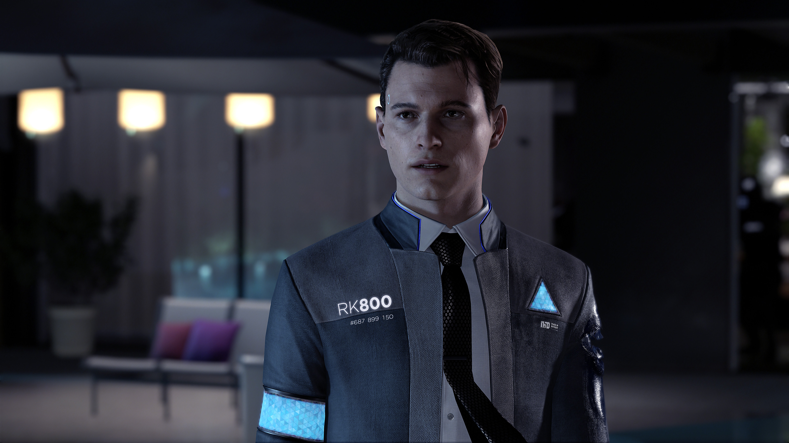

In summary I enjoyed this game because of how it showcased when humans and artificial intelligence live side by side until the robots within the game become deviants and begin to wake up and feel human emotion.

I prefer detroit becomes human to other games due to its unique style of problem solving, fast actions that can heavily impact the way your game plays out in the end. compared to games like star wars jedi fallen order where your mistakes don't have as much of an impact as you can just try again.